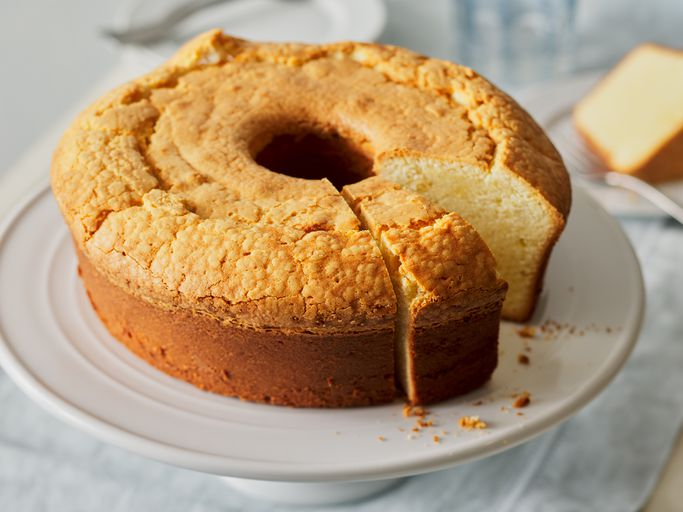

Cheese Cake Recipe

Description
This cream cheese pound cake is a moist, dense, and extremely delicious dessert.
Ingredients
- 1 ½ cups butter
- 1 (8 ounce) package cream cheese
- 3 cups white sugar
- 6 large eggs
- 3 cups all-purpose flour
- 1 teaspoon vanilla extract
Steps
- Gather all ingredients.
- Preheat the oven to 165° C. Grease and flour a 10-inch tube pan.
- Cream butter and cream cheese together in a mixing bowl until smooth. Gradually add sugar and beat until fluffy.
- Add eggs, two at a time, beating well with each addition. Add flour all at once and mix in.
Mix in vanilla. Pour butter into the prepared cake pan.
- Bake in the preheated oven for 1 hour and 20 minutes, checking for doneness at 1 hour. A toothpick inserted
into the center of the cake should come out clean. Remove and cool before serving.
- Serve and enjoy!
Home
Credit